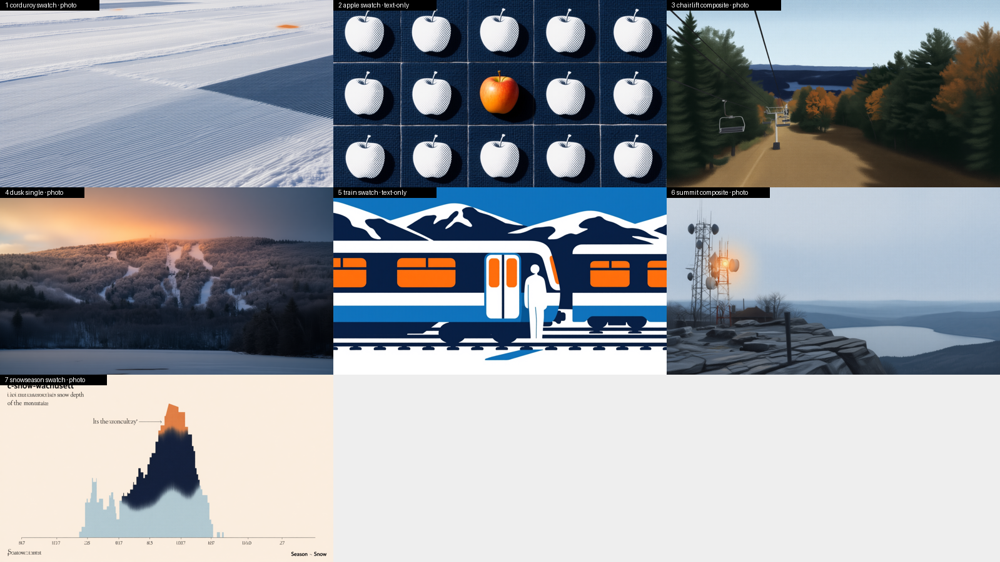
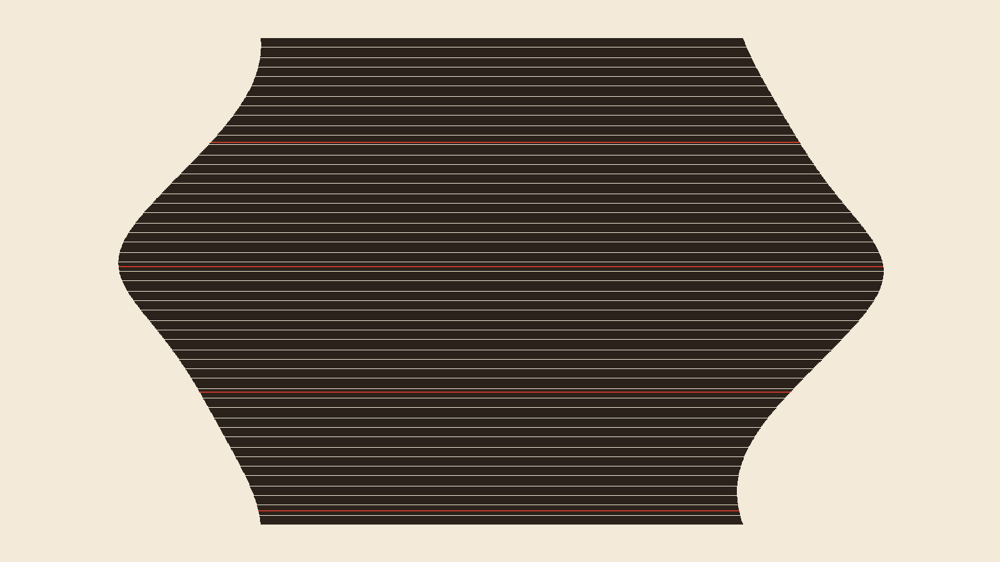
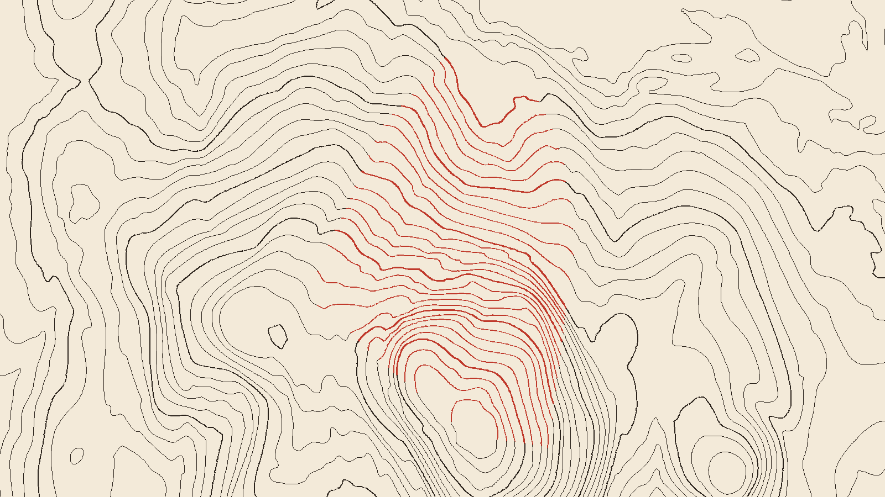
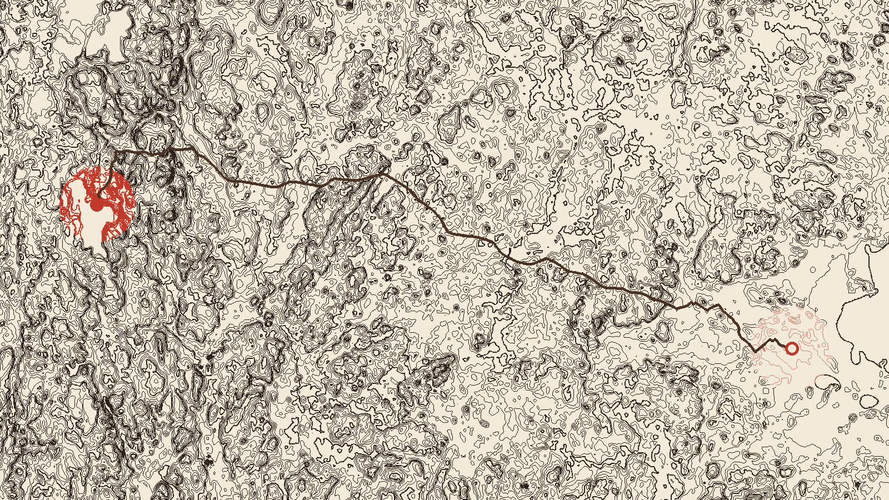
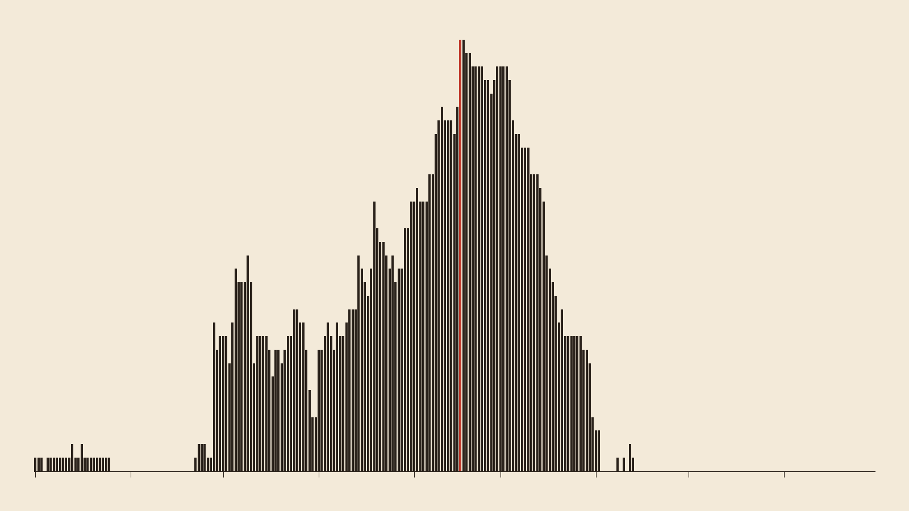
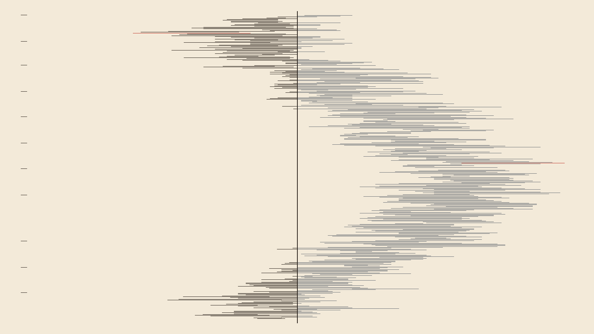

themeWachusett Mountain: a 2006-foot monadnock in Princeton, Massachusetts. Snow, autumn foliage and apples, the sunset on groomed trails, and the ski train from Boston.readtagsski, resort, massachusetts, new-england, snow, chairlift, apple, train, foliagebannedThe postcard vista of the snowy summit with ski slopes at sunset · A skier or snowboarder carving a turn on a groomed run
judgehf.co/mradermacher/Qwen3-VL-8B-Instruct-abliterated-GGUF:Q4_K_Mwinnereliashbergrankingeliashberg 14

components — the deterministic parts (slot 7)




